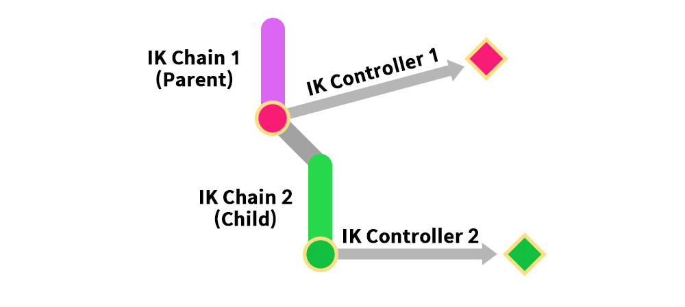
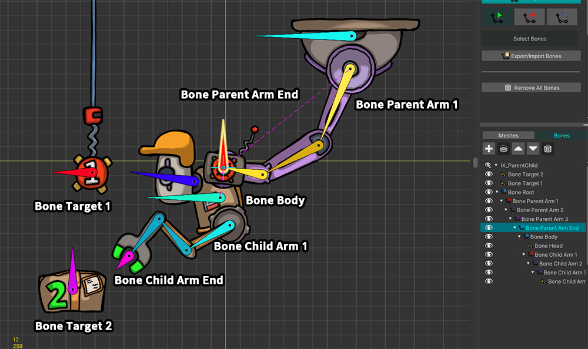
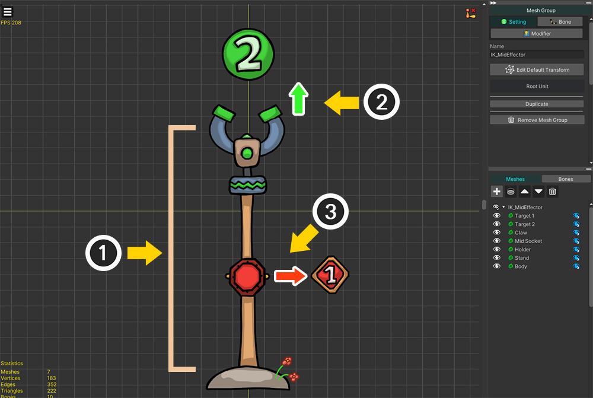
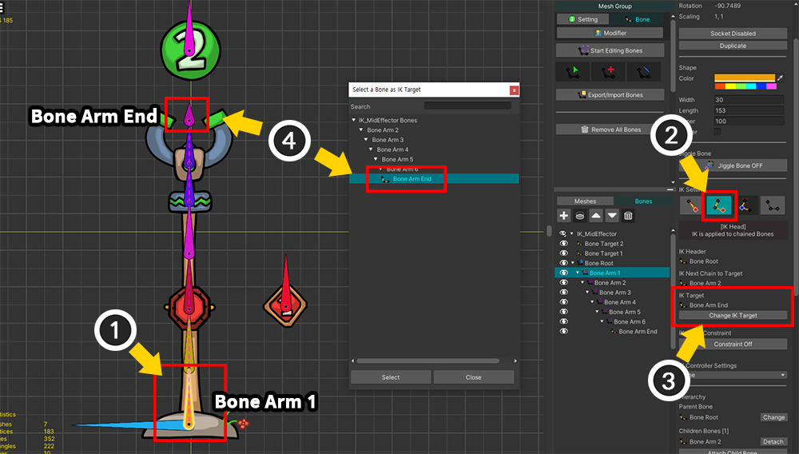
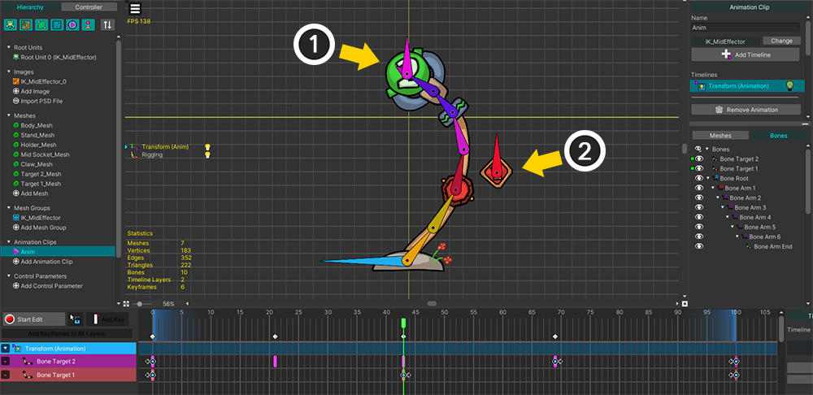
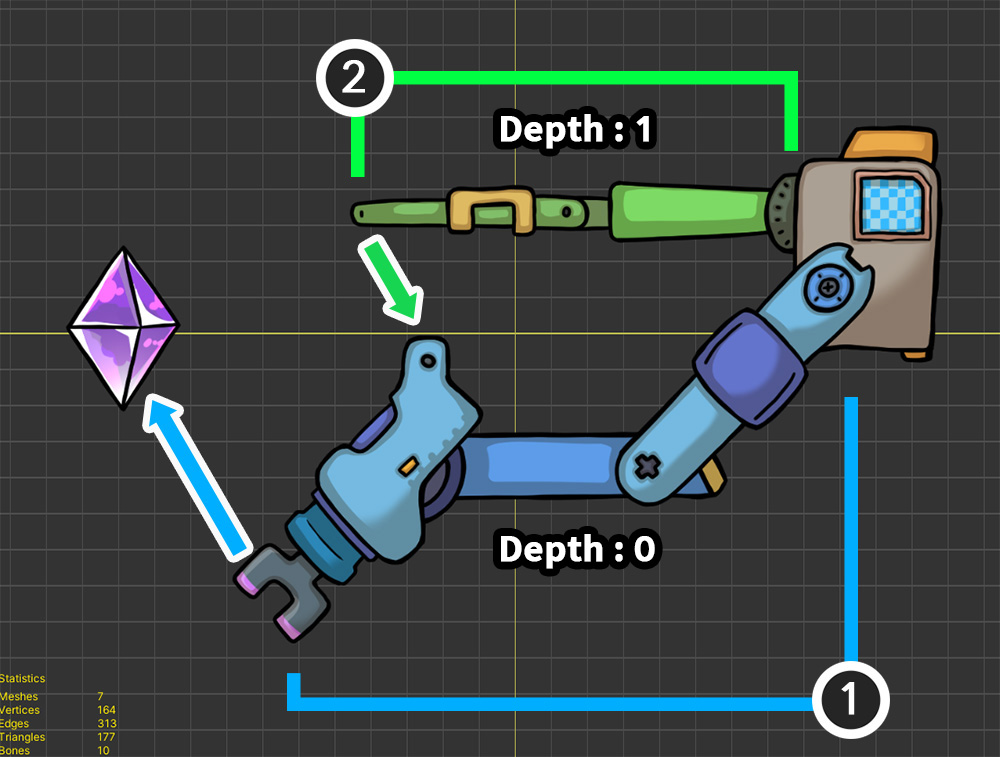
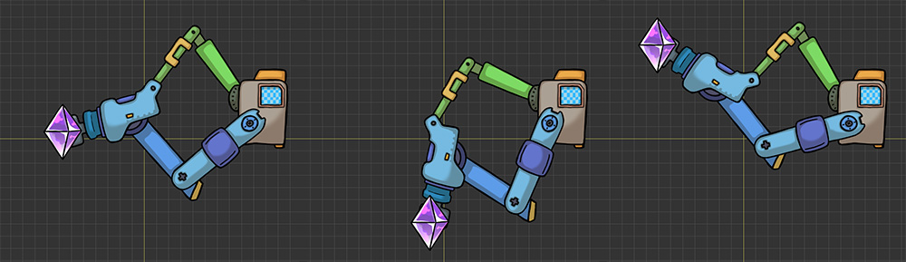

AnyPortrait > マニュアル > 複雑に構成されたIKコントローラ
複雑に構成されたIKコントローラ
1.5.0
「AnyPortrait v1.5.0」で「IKコントローラ」がより柔軟に使えるように改善されました。
おかげで複雑に構成された複数の「IKコントローラ」を自然に動作させることができるようになりました。
「IK コントローラ」が複雑に構成される場合は、通常、「IKコントローラが他のIKコントローラに従属している場合」です。
このページでは、「IKコントローラ」が従属的に動作するいくつかの状況を紹介します。
「IKコントローラ」に対する詳しい説明を次のマニュアルで確認することができます。
- IK設定
- IKコントローラ
IKチェーンが階層的に接続されている場合

「IKコントローラ」が設定された2つの「IKチェーン」が階層的に接続されている場合を確認しましょう。
この場合、「子IKチェーン」の「IKコントローラ」は「親IKチェーン」に依存しています。
つまり、「親 > 子」の順番で「IK チェーン」の「IK コントローラ」が順番に演算になるはずです。

「IKコントローラ」が属する2つの「IKチェーン」が「親子」の関係で連結された例です。
このロボットは天井に接続されており、貨物を持って移動します。
(1) 最初の「IKチェーン」です。紫色の機械の腕によってロボットの胴体が動いており、この機械の腕は天井にぶら下がっている「1」が書かれた赤色の対象に接続されます。
(2) 2番目の「IKチェーン」です。ロボットの胴体に付いている腕は、緑の「2」が書かれた貨物をつかむ。

これはロボットの主要なボーンです。
「親IKチェーン」に対応する「Bone Parent Arm」と「子IKチェーン」に対応する「Bone Child Arm」があります。
これらのチェーンは互いに接続されており、その間に「Bone Body」が存在します。
それぞれの「IKコントローラ」の対象となる「Bone Target 1」と「Bone Target 2」もあります。

まず、「親IKコントローラ」を設定してみましょう。
(1) 紫色のマシンアームの「Bone Parent Arm 1」を選択し、「Bone Parent Arm End」までの「IKチェーン」を設定します.
(2) 紫色の機械アームの最後のボーンである「Bone Parent Arm End」を選択します。
(3) 「IKコントローラ」のタイプを「Position」方式に設定し、「Effector Bone」を「Bone Target 1」に設定した後、「Default FK/IK Weight」を「1」に設定します。

(1) 赤色のターゲット（「Bone Target 1」）を動かすようにアニメーションを作成します。
(2) 紫色の機械アームが「IKコントローラ」によって対象にくっつきます。
機械の腕に付いているロボットの胴体も一緒に動くようになります。

次に、ロボットの腕に対応する「子IKコントローラ」を設定しましょう。
(1) ロボットの腕の「Bone Child Arm 1」を選択し、「IKチェーン」がロボットの手（「Bone Child Arm End」）につながるように設定します。
(2) ロボットの手（「Bone Child Arm End」）を選択します。
(3) 「IKコントローラ」のタイプを「Position」方式に設定し、貨物（「Bone Target 2」）が「Effector Bone」になるように設定した後、「Default FK/IK Weight」を「1」に設定します。

(1) 貨物（「Bone Target 2」）が動くようにアニメーションを作成します。
(2) 「IKコントローラ」によってロボットの腕が貨物を握ります。
同時に、紫色のマシンアームの「IKコントローラ」も動作することがわかります。

2つの「Effector Bone」だけを動かして、上記のようなアニメーションを作成できます。
「IKコントローラ」を持つ「IKチェーン」が互いに「親と子」の関係で接続されている場合は、上記のように特別な設定がなくてもうまく動作することがわかります。
IKチェーン内に2つ以上の「Effector」がある場合

「IKチェーン」に属する2つ以上のBoneにそれぞれ「IKコントローラ」を設定できます。
つまり、単一の「IKチェーン」に2つ以上の「Effector Bone」が存在することになります。
この場合、末端に位置する「IKコントローラ」が「上位IKコントローラ」の結果に依存します。

地面から湧き出たメカニカルクローアームです。
この腕は「2」と書かれた緑色のボールをつかむつもりです。
「IKチェーン」に2つの「IKコントローラ」を設定しましょう。
(1) メカニカルクローアームです。 1つの「IKチェーン」で構成されています。
(2) 人差しは「2」が書かれた対象を捕まえようとします。
(3) この腕の真ん中に小さな「ソケット」があります。この「ソケット」は「1」が書かれた対象に近づこうとする性質を持ちます。

「IKチェーン」を設定しましょう。
(1) 最初のボーンである「Bone Arm 1」を選択します。
(2) 「IK Head」タイプに変更します。
(2) 「Change IK Target」ボタンを押します。
(4) 「Bone Arm End」を選択して「IKチェーン」を完成させます。
この例は、上記の「階層的に接続されたIKチェーン」の例とは異なります。
上記の例では、2つの「IKチェーン」が互いに接続されているのとは異なり、この例では、メカニカルクロアームのすべてのボーンが1つの「IKチェーン」を構成しているためです。

それでは、「IKコントローラ」を設定してみましょう。
まず、メカニカルクロアームが物体をつかむようにしましょう。
(1) 「IKチェーン」の最後のボーンである「Bone Arm End」を選択します。
(2) 「Position」タイプの「IKコントローラ」を設定し、「Effector Bone」を「Bone Target 2」に設定した後、「Default FK/IK Weight」を「1」に設定します。

「IKチェーン」の真ん中のボーンにも「IKコントローラ」を指定してみましょう。
(1) 「IKチェーン」の真ん中にあるボーンを選択します。
(2) 同様に「Position」タイプの「IKコントローラ」を設定します。今回は「Bone Target 1」を対象に設定します。 「Default FK/IK Weight」を「1」に設定します。

「IKコントローラ」の対象となる2つの「Effector Bone」を動かしてアニメーションを作ると、メカニカルクローアームが上記のように動きます。
(1) 「IKチェーン」の先端に位置する人差し指は、対象物をつかむ。
(2) 「IKチェーン」の中央に位置するボーンも対象に向かって移動しますが、移動範囲は制限されます。

完成したアニメーションです。
「IKチェーン」の途中で「IKコントローラ」を追加に設定すると、「Effector Bone」に向かって制限的に動くことがわかります。
この手法により、「Effector Bone」を中間に追加して「IKチェーン」の形状を制御することが可能です。
「Effector」が別のIKチェーンに属している場合

「Effector Bone」が別の「IKチェーン」に属している場合、その「IKコントローラ」は依存して動作します。
「Effector Bone」を持つ他の「IKチェーン」の演算が完了しなければ、この「IKコントローラ」が正常に演算できるからです。
しかし、それが「Effector Bone」が属する他の「IKチェーン」との親子関係が形成されない場合、問題が発生します。
従属的に動作する「IKコントローラ」は後で処理されるべきです。
そのため、この場合は「IKコントローラ」の処理手順を直接指定してください。
このとき、「Depth」という属性を使用してこの問題を解決できます。
より大きな値の「Depth」を持つ「IKコントローラ」が後で演算される点を利用して問題を解決しましょう。
IKコントローラの順序
「IKコントローラ」の処理手順は、次の規則によって決定されます。
1. 「Depth」属性の値が小さい場合、まず処理されます。同じ「Depth」を持っていれば、それ以外の規則によって決定されます。
2. 親ボーンが子ボーンの前に処理されます。
3.直接の親子関係を持たないボーンの処理順序は任意に決定され、ユーザーは変更できません。
4. ボーンの階層的な深さが処理順序を決定しません。

2つの機械アームを持つロボット。
(1) 青い機械の腕は宝石に向かいます。このマシンアームは他の「IKコントローラ」に依存しません。
(2) 緑の機械の腕は青い機械の腕に接続される。したがって、緑色の機械アームは青色の機械アームよりも後で操作する必要があります。
上記の例に示すように、異なる「IKチェーン」の「IKコントローラ」が相互作用する場合、「依存するIKチェーン」は後で操作する必要があります。
「Depth」が大きいほど、「IKコントローラ」は後で処理されるため、依存する緑色の機械アームの「Depth」は大きい値を持つ必要があります。

この例の主要なボーンです。
「Bone Root」では、「Bone Main Arm」と「Bone Sub Arm」がそれぞれ接続されています。

ここで確認する必要があるのは「Bone Sub Target」です。
「Bone Sub Target」は、青い腕をなす「Bone Main Arm 3」の子です。
そして、このボーンは緑色のマシンアームに接続される「Effector Bone」です。
つまり、「IKチェーン」の中に他の「IKコントローラ」の対象となるBoneが属する状態です。
この点を認識して「IKコントローラ」を設定してみましょう。

まず、青いマシンアームの「IKコントローラ」を設定します。
(1) 「Bone Main Arm 1」を選択し、青色の機械アームの「IKチェーン」を設定します。
(2) 「IKチェーン」の最後のボーンである「Bone Main Arm End」を選択します。
(3) 「Position」タイプの「IKコントローラ」を設定し、そのターゲットを宝石（「Bone Gem」）に設定します。デフォルトの重みも「1」に設定します。
(4) 「IK Depth」属性の値をデフォルト値の「0」に設定します。

次に、グリーンマシンアームの設定も続けてくれます。
(1) 「Bone Sub Arm 1」を選択し、緑色の機械アームの「IKチェーン」を設定します。
(2) 「IKチェーン」の最後のボーンである「Bone Sub Arm End」を選択します。
(3) 「Position」タイプの「IKコントローラ」を設定し、その対象を青色の機械アームに属する「Bone Sub Target」に設定します。重みも1に設定します。
(4) 「IK Depth」属性の値を「1」に変更します。

(1) 宝石が動くアニメーションを作ります。
(2) 「IKコントローラー」により、青色のマシンアームが宝石をつかむポーズをとります。
(3) 同時に、緑色のマシンアームが青色のマシンアームに接続されているように移動します。

宝石の動きに応じて、2つのマシンアームが一緒に動作するアニメーションを見ることができます。
処理順序が間違っている場合

「IKコントローラ」の処理手順が間違っている場合は、どのように見えるかを見てみましょう。
(1) 後で計算する「IKコントローラ」のボーンを選択し、「IK Depth」の値を「0」より低い「-1」に変更しましょう。
このように設定すると、後で動作する必要があるこの「IKコントローラ」はむしろ最初に処理されます。

処理順序が間違っており、緑色のマシンアームが青色のマシンアームに正しく接続されていないことがわかります。
（緑色のマシンアームが向いている場所は、青色のマシンアームの「IKコントローラ」が適用される前の位置です。）
上記の例の結果を次の動画でも確認できます。